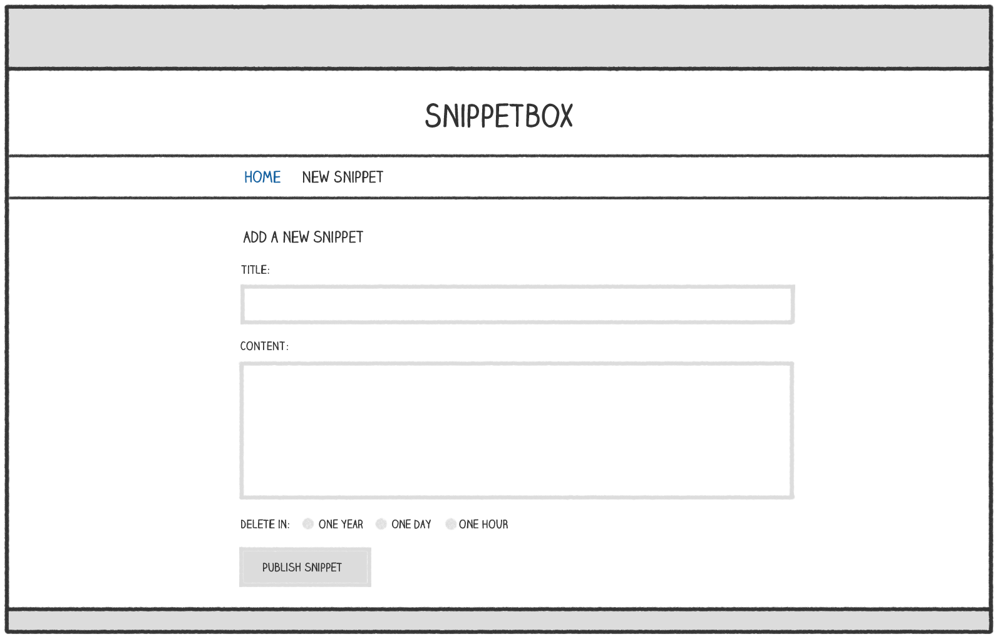

فصل ۷.
پردازش فرمها
در این بخش از کتاب، روی افزودن یک فرم HTML برای ایجاد اسنیپتهای جدید تمرکز میکنیم. فرم به این صورت خواهد بود:

جریان سطح بالا برای پردازش این فرم از الگوی استاندارد Post-Redirect-Get پیروی میکند و به این صورت کار میکند:
- هنگامی که کاربر یک درخواست
GETبه/snippet/createمیکند، فرم خالی به او نمایش داده میشود. - کاربر فرم را تکمیل میکند و از طریق یک درخواست
POSTبه/snippet/createبه سرور ارسال میشود. - handler
snippetCreatePostدادهٔ فرم را اعتبارسنجی میکند. در صورت خطا، فرم با پیام و مقادیر قبلی دوباره نمایش داده میشود؛ در صورت موفقیت، snippet در پایگاه داده ذخیره و کاربر بهGET /snippet/view/{id}هدایت میشود.
به عنوان بخشی از این، یاد خواهید گرفت:
- راهاندازی فرم HTML برای ایجاد snippet.
- تجزیه دادههای فرم ارسالشده با
POST. - اعتبارسنجی ورودی کاربر.
- نمایش خطا و پر کردن مجدد فیلدها.
- توابع کمکی اعتبارسنجی در پکیج
validator. - تجزیه خودکار فرم با
go-playground/form(اختیاری).